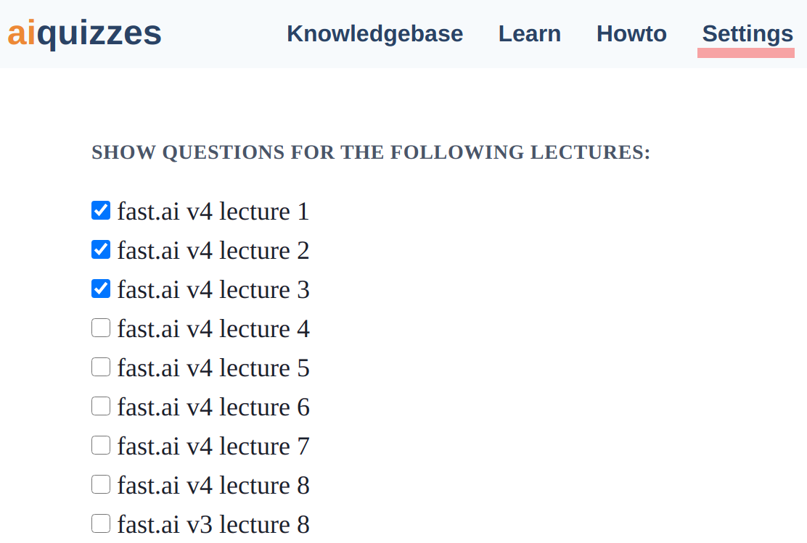
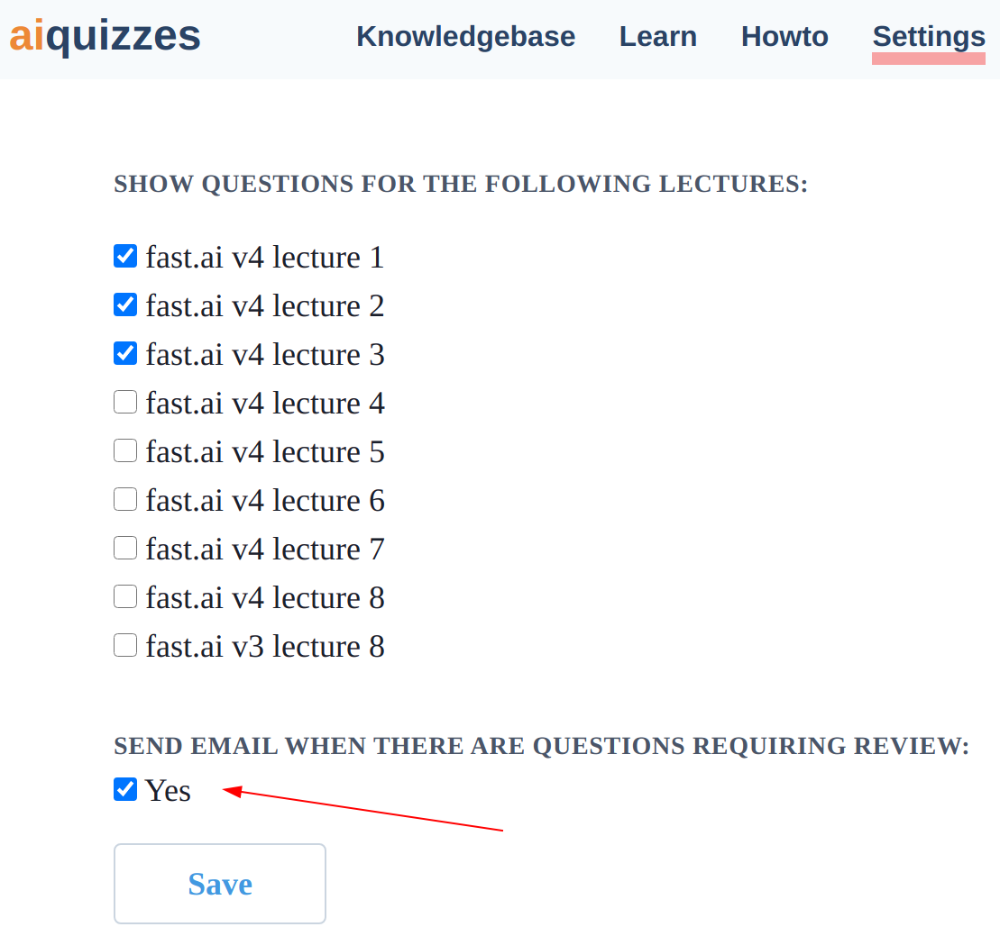

Howto
How to use the learning module?
- The learning module will pick questions for you to review based on a modified super memo 2 algorithm.
- Read the question, phrase the answer either in your mind or out loud and press the 'show answer' button.
- Compare your answer to the one stored in the database. Rate your answer to provide input to the spaced repetition algorithm (the algorithm strives to optimize when to show you the question again, to maximize review efficiency and retention).
- It is perfectly fine to use this software for learning. Meaning, it is okay to not know an answer to a question. Also, when you see a question for the first time, the algorithm goes into learning mode - it will be cycling through questions without delay until you answer 'spot on' for the first time. When this happens, only then the spaced repetition algorithm will kick in.
How to select which lectures to see questions from?
- To select the lectures from which the learning module will pick questions for you, please go to Settings.
- Select lectures.
- Hit save.

How to toggle receving a summary email with questions ready for review?
- This email is sent out every three days. To enable / disable it please go to Settings.
- Enable or disable the email.
- Hit save.
